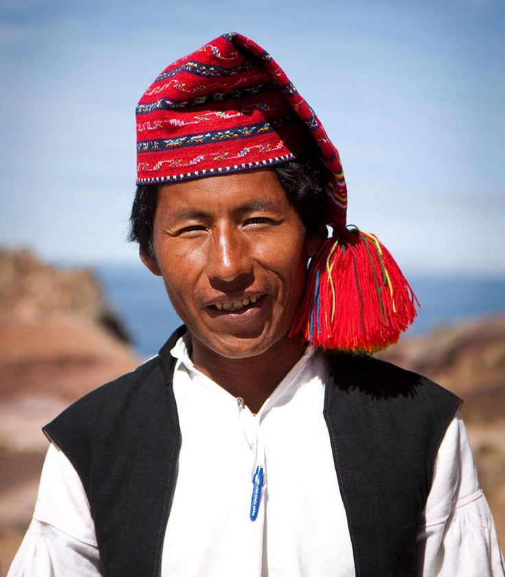

Comida Peruana
Inicio
Multimedia
Contacto
Comida Peruana
Bienvenidos a la web para comer algo rico en Rosario
Historia de la comida peruana
Lugares para conocer en Perú
Santuario Histórico de Machu Picchu
Cañón del Colca
Saqsaywaman
Lugares para conocer en Rosario
Monumento Histórico Nacional a la Bandera
Parque Independencia
Complejo Cultural Parque España
Nuestro dueño
Soy Alberto, creador de nuestras exquisiteces
